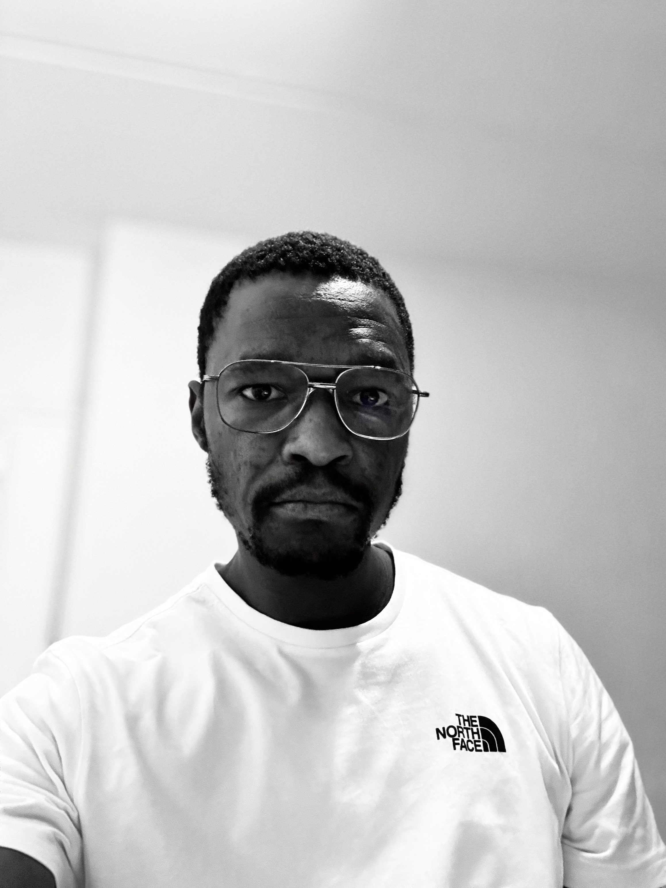

My name is Rubia and I go by Ruby. I was born in South Africa and live my family in Madagascar. I am currently working as administrative legal assistant at a law firm. My children are my world and I love spending time with them. I love to travel and I love to learn new things.

Mamelodi, South Africa

Mamelodi is a vibrant township located east of Pretoria in Gauteng, South Africa. Established during the apartheid era in the 1950s, it has developed into a dynamic community known for its rich cultural heritage, music, and strong social bonds. The area is home to a diverse population and has produced many notable artists and athletes. Mamelodi continues to grow, with expanding infrastructure, schools, and local businesses contributing to its development. It remains a symbol of resilience and community strength in South Africa.